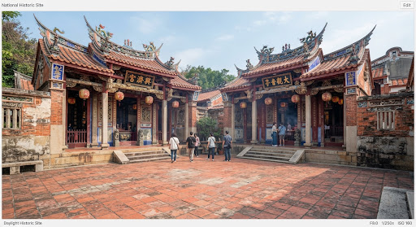

全台唯一
建於西元 1678 年 (明永曆三十二年)
全台罕見・佛道共構雙廟與中央官廳
arrow_forward
左廟奉祀觀音佛祖，右宮崇奉保生大帝，雙廟並肩同築已屬稀世罕聞；更奇絕者在於兩廟中央夾設一所「官廳」。
history_edu
清代每逢仲春、仲秋致祭保生大帝，台廈兵備道及地方文武百官必先至中央官廳「洗塵整冠、更換祭服」，是全台唯一官民一體、佛道互映的歷史典範。
headphones
全台罕見・佛道共構雙廟與中央官廳
點擊收聽詳細解說 (02:18)